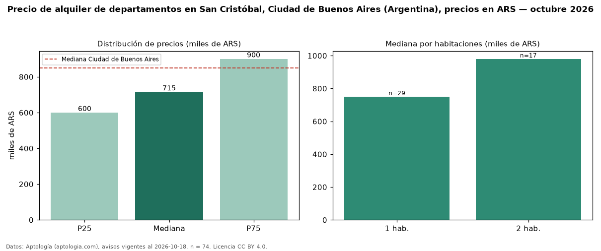

Precio de alquiler de departamentos en San Cristóbal, Ciudad de Buenos Aires (Argentina), precios en ARS — octubre 2026
Con 74 avisos vigentes, el canon mediano de departamentos en alquiler en San Cristóbal, Ciudad de Buenos Aires (Argentina) es ARS 715.000 al mes. Eso es 16 % por debajo de la mediana de Ciudad de Buenos Aires para departamentos (ARS 850.000). Por metro cuadrado, la mediana es ARS 17.538/m² al mes (n = 70 avisos con área), 7 % por debajo de Ciudad de Buenos Aires (ARS 18.889/m²). Por precio mediano es el puesto 32 de 35 barrios de Ciudad de Buenos Aires con al menos 30 avisos de departamentos en alquiler (ARS): entre las más económicas. El área mediana anunciada es 39 m². El segmento con más oferta es el de 1 habitación (29 avisos, mediana ARS 750.000); pasar de 1 habitación a 2 habitaciones cambia la mediana +31 %. La mitad central de los avisos va de ARS 600.000 a ARS 900.000 (razón 1,5), una dispersión moderada. Datos: Aptología (aptologia.com), CC BY 4.0 — https://www.aptologia.com/ar. Archivos: PDF, CSV con las cifras y gráfica PNG.

| Avisos únicos | 74 |
|---|---|
| Percentil 25 | COP 600.000 |
| Mediana | COP 715.000 |
| Percentil 75 | COP 900.000 |
| Mediana por m² | COP 17.537 |
Fuente: avisos vigentes de portales inmobiliarios recopilados por Aptología, deduplicados (mínimo 30 avisos únicos por celda). Precios pedidos, no cerrados. Fecha: 2026-10-18.